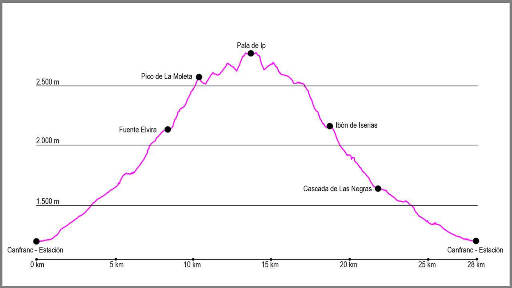

Desde el puente de la Estación de Canfranc, cogeremos la calle principal en dirección norte. Al llegar al final del pueblo seguiremos por el arcén derecho, y justo al pasar la boca española del Túnel de Somport sale un pequeño camino que va paralelo a la carrera. Lo tomaremos y a escasos 200 metros llegaremos a un primer puente que cruza el río Aragón y desde donde sale la pista de Coll de Ladrones. Seguiremos por ella unos 300 metros, y tras obviar el cruce del Paseo de Los Melancólicos tomaremos el siguiente que sale a nuestra derecha en dirección a la Casita Blanca.
Una vez llegado a este punto, giraremos a la izquierda para salir a otra pista, esta vez la de Picaube, que seguiremos durante más de un kilómetro obviando los 2 caminos que salen a nuestra derecha.
Una vez pasado el refugio de Picaube tomaremos un camino marcado que sale en la siguiente curva, y tras unos escasos 100 metros tomaremos la bifurcación a la izquierda para comenzar la subida por esté cómodo sendero. Poco a poco vamos ganando altura hasta llegar una gran diagonal donde una sirga nos ayudará a atravesarla. Poco después cruzaremos el barranco de Cargates y ascenderemos hasta llegar a otro sendero, donde giraremos a la izquierda y poco después llegaremos a la Caseta del Vasco.
Aquí seguiremos nuestra ascensión hacia Fuente Elvira por el camino marcado. Esta ascensión será rápida y cómoda. Una vez hayamos repuesto agua, volveremos apenas unos 20 metros sobre nuestros pasos para coger un resto de camino que sale a nuestra derecha en dirección este y que entre diques nos hará ganar altura rápidamente. Poco a poco esta subida no dirige hacia la divisoria con el barranco del Borreguil de Samán, y será justo cuando lleguemos a este punto que veremos ya La Moleta, y justo a nuestros pies, el Collado de La Moleta.
Una vez aquí, cogeremos el camino que en dirección sur va por la cresta que nos separa del Ibón de Iserias y ascenderemos en poco tiempo hasta la cima, a 2.572m. Aquí el camino continuará por toda la divisoria entre el valle de Ip y de Izas y lo primero será bajar por la chimenea más al sureste de la cima hasta alcanzar la cresta. Al principio descenderemos hasta un pequeño collado para pronto empezar a subir hacia los picos de La Tronquera. Justo en esta cumbre tendremos un paso delicado, pero que sortearemos por la izquierda con precaución y nos dará paso hasta el collado de la Pala de Ip. Aquí volveremos a seguir recto y extremando la precaución iremos ganando altura, primero por la cara norte y después por la sur del pico, siguiendo siempre los hitos, los cuales nos conducirán hasta la primera cima. Para llegar a la cima principal solo tendremos que seguir por la cresta 50 metros más.
La primera parte del regreso coincidirá con la ida, volviendo a hacer, pero en sentido contrario, toda la divisoria entre Izas e Ip. Una vez hayamos desecho nuestro camino hasta La Moleta, empieza el descenso hacia el ibón de Iserias. Desde la propia cima cogeremos dirección norte para situarnos en el balcón del pico y buscar unos hitos que nos llevarán a un paso estrecho. Nada más pasarlo el camino empieza a estar más marcado y enseguida nos llevará hasta el collado de la Moleta. Aquí giraremos a la derecha para empezar el verdadero descenso.
Esta parte del recorrido está bastante clara y simplemente tendremos que seguir la traza y los hitos hasta llegar al mismo ibón, el cual rodearemos por la izquierda hasta la coger la salida de la hoya por una estrecha zona de hierba que nos llevará a dar vista al valle de Izas. Una vez hayamos subido este repecho, el descenso nos llevará primero hasta la caseta de la Vuelta de Iserias y después hasta la cascada de las Negras, en una bajada bastante rápida y cómoda.
Una vez lleguemos al valle giraremos a nuestra izquierda para afrontar la última parte del recorrido. Bajaremos primero por un camino bastante sencillo para llegar después a una zona de piedra y más adelante a una zona de arbolado, antes de llegar a la pista de Coll de Ladrones. Una vez en ella giraremos a la izquierda para afrontar una ligera subida hasta llegar al fuerte, para desde allí ya ver Canfranc y afrontar la última parte del descenso hasta el pueblo.
